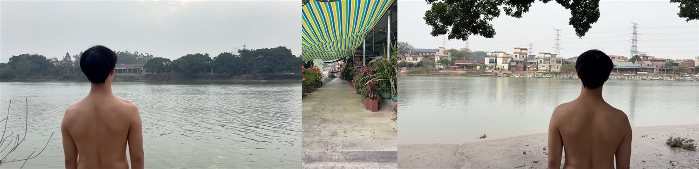
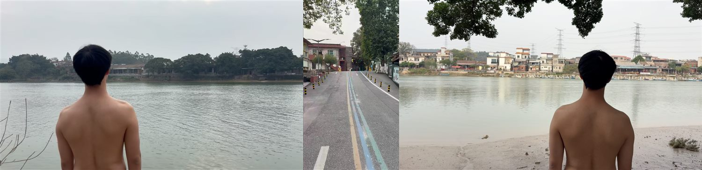
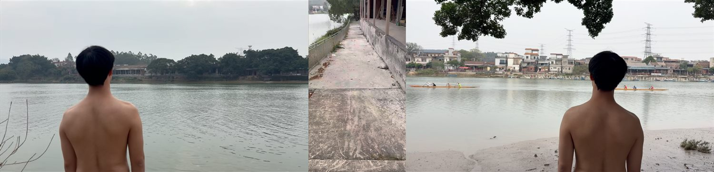
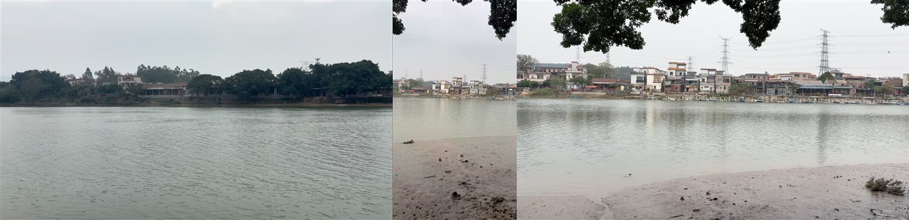
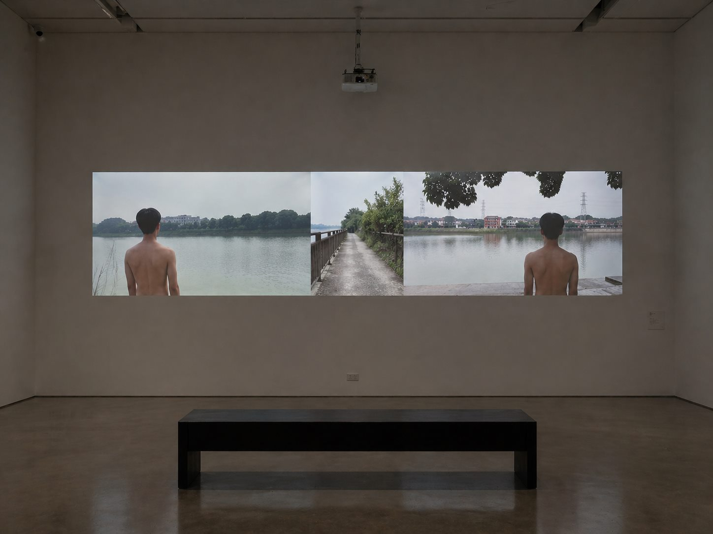

ACTION ARCHIVE / 01 / FIELD
《停留之处》Place of Staying
一次关于靠近一个地方的行动记录：不是抵达，而是等待如何让观看逐渐改变。
A record of approaching a place: not arrival, but how waiting gradually changes looking.
横向拖动、滚轮或方向键浏览；点击图片放大Scroll, use arrow keys, or click to enlarge







FRAME 0107 IMAGES
作品文字 / 展开阅读Work text / Read note
《停留之处》是一件行为影像作品，创作于左滩驻地期间，也是一次关于艺术家如何感受、观看并试图靠近一个地方的个人经验记录。作品由三个同步播放的影像共同构成：左右两侧分别呈现面向对岸的观看位置，身体在其中短暂停留并持续观看；中间画面记录一次从一侧通向另一侧观看点的身体行动。
作品并不强调抵达本身，而更关注等待如何改变观看，如何使原本未被注意到的环境、空间与细微关系逐渐显现。等待没有让他更快抵达，却让他真正开始感受。
Place of Staying was created during the artist's residency in Zuotan. Three synchronized videos form the work: the left and right images present two viewing positions facing the opposite shore, while the central image records a bodily movement from one viewing point to the other.
The work does not emphasize arrival. It asks how waiting changes perception, allowing overlooked environments, spaces, and subtle relations to emerge.